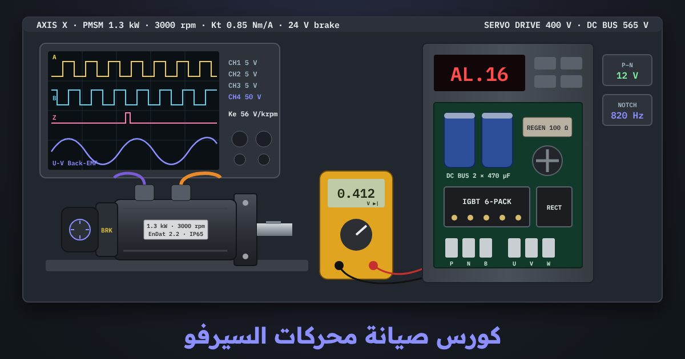

كورس صيانة محركات السيرفو
كيف تختبر محرك السيرفو وإنكودره وفراملِه ودرايفه بالأجهزة الحقيقية، وتقرأ الإنذار وتصل إلى سببه، ثم تصلح وتضبط وتعيد المحور إلى الإنتاج. تبدأ بالسلامة وتفريغ مكثفات الدرايف، ثم الملفات والعزل و Back-EMF، ثم كل أنواع الإنكودر وفحصها واستبدالها وضبط الإزاحة، ثم الفرامل والمحامل والكابلات، ثم الدرايف نفسه وإنذاراته وضبطه. الكورس مبني على IEC 60034 و IEC 61800 و IEEE 43 وكتيّبات الشركات المصنّعة، ومشروعه إصلاح محور ماكينة CNC من الإنذار حتى أول قطعة سليمة.
الدرس الأول مفتوح للجميع، والمحاكيان يُفتحان مع الكورس

13 درسًا بالترتيب، وبعد كل درس تمرين على المحاكي
الدروس مكتوبة بالعربية الفصحى، وكل اختبار مشروح خطوة بخطوة بالأرقام. في كل درس أسئلة، وفي الدرس الأخير المشروع والامتحان النهائي.
- السلامة في صيانة أنظمة السيرفومفتوح للجميع
- الطاقة لا تختفي بفصل القاطع
- المكثفات تحتفظ بالجهد
- قِس لتثبت أن الدرايف آمن
- STO وزر الطوارئ لا يعزلان الطاقة
- المحور الرأسي Z: الجاذبية لا تتوقف
- الأدوات، وقرار «هل أبدأ؟»
- أسئلةأسئلة الدرس
- محرك السيرفو من الداخل ولوحة بياناته
- ما الذي داخل محرك السيرفو؟
- لوحة البيانات: خمسة أرقام تهمّك
- العزم المستمر والعزم الأقصى
- مثال محلول: محرك محور X
- الأطراف: U إلى U تمامًا
- قبل تركيب محرك بديل
- محاكياقرأ لوحة محرك X…
- أسئلةأسئلة الدرس
- اختبار ملفات محرك السيرفو
- ثلاثة أسئلة، وثلاثة قياسات
- المقاومة: هل الأطوار متساوية؟
- العزل: دون إتلاف الإنكودر
- Back-EMF: هل المغانط بقوتها؟
- القرار: هل المحرك سليم؟
- محاكيقِس مقاومة الأطوار الثلاثة وعدم الاتزان…
- أسئلةأسئلة الدرس
- أنواع الإنكودر كلها
- ماذا يخبر الإنكودرُ الدرايفَ؟
- التزايدي: عدّ الخطوات من الباب
- التماثلي: Sin/Cos والريزولفر
- المطلق: رقم البيت
- التسلسلي: الموضع رقمًا جاهزًا
- إنكودر مجهول؟ أربع خطوات
- محاكيميّز كل إنكودر من موصّله وإشاراته وملصقه…
- أسئلةأسئلة الدرس
- فحص الإنكودر وأعطاله
- ابدأ بالتغذية: قِسها عند الإنكودر
- الإشارة التزايدية: كل خط له توأم معكوس
- كيف تقيس؟
- اختبار العدّ: لفة واحدة = 10,000 عدّة
- Sin/Cos والريزولفر: ارسم دائرة
- الريزولفر في الطاولة الدوارة A
- الإنكودر التسلسلي والبطارية: اسأل الدرايف
- بطارية الإنكودر المطلق (محور X)
- قبل أن تستبدل: رتّب الفحص
- محاكيافحص الإنكودر بالأوسيلوسكوب: أزواج A/B/Z، ودائرة Sin/Cos…
- أسئلةأسئلة الدرس
- استبدال الإنكودر وضبط الإزاحة
- زاوية الإزاحة: الدرايف يدفع في التوقيت الصحيح
- فك الإنكودر وتركيبه
- الطريقة الأولى: الحقن بالتيار المستمر
- الطريقة الثانية: Back-EMF مقابل Hall
- طرق الدرايف الآلية، ومحور Z
- تحقق قبل العمل، ثم اضبط المرجع
- محاكياستبدل الإنكودر، ثم اضبط الإزاحة بالحقن بالتيار المستمر…
- أسئلةأسئلة الدرس
- فرامل محرك السيرفو
- كيف تعمل الفرامل؟ النوابض تمسك والكهرباء تحرّر
- افحص الملف بالأوم
- قِس الجهد عند المحرك، لا عند المصدر
- التوقيت: العزم أولًا، ثم التحرير
- عند البدء
- عند التوقف
- الإخماد: احمِ الخرج دون تأخير الإمساك
- عزم الإمساك والتآكل
- محاكياختبر فرامل محرك Z والرأس مسنود…
- أسئلةأسئلة الدرس
- المحامل والسدادات والمغانط
- ما الذي يُستهلك في المحرك؟
- افحص المحمل: اسمع وأدر باليد
- الاهتزاز: سجّله كل شهر
- الحمل الزائد يقتل المحمل بسرعة
- السدادة: الزيت داخل المحرك له سبب
- المغانط: قِس جهدها وهي تدور
- محاكيشخّص محملًا تالفًا من الصوت والاهتزاز…
- أسئلةأسئلة الدرس
- الكابلات والتأريض والتشويش
- لكل محرك كابلان
- الكابل الطويل يُضعف تغذية الإنكودر
- الحجب: طريق قصير يعود فيه التشويش
- القدرة بعيدة عن الإشارة
- فحص الكابل خطوة بخطوة
- حالة عملية: المحور Y يفقد عدّات
- محاكيابحث عن أعطال الكابلات والتشويش: حجب مقطوع…
- أسئلةأسئلة الدرس
- صيانة الدرايف: الدائرة ومكوّناتها
- داخل الدرايف ثلاث محطات
- الدرايف المطفأ ما زال خطرًا
- اختبار المقوّم و IGBT بوضع الديود
- المكثفات تشيخ بالحرارة
- مقاومة الكبح: صمام أمان الجهد
- المراوح وخطة الصيانة
- محاكيفرّغ الناقل وقِسه حتى يقل عن 50 V،…
- أسئلةأسئلة الدرس
- الإنذارات وتشخيصها
- الإنذار عرَض، لا قطعة
- متى ظهر؟ نصف الجواب
- الإنذارات الشائعة وماذا تقيس
- التيار والجهد: AL.oc و AL.ov و AL.Lv
- الإنكودر والتتبّع والحمل
- AL.EnB: بطارية إنكودر X
- AL.PoS: خطأ التتبّع
- AL.PoS ثم AL.oL على Z عند الصعود
- أخطاء شائعة، وما بعد الإصلاح
- محاكياقرأ الإنذار على شاشة الدرايف ذات المقاطع السبعة،…
- أسئلةأسئلة الدرس
- الضبط بعد الإصلاح Tuning
- ثلاث حلقات داخل الدرايف
- نسبة القصور الذاتي
- الكسب: صلب بلا رنين
- الضبط خطوة بخطوة
- الرنين ومرشّح Notch
- المحور Z، وتوافق X مع Y
- تتابع الفرامل في Z
- المحاور المتزامنة
- محاكيقدّر نسبة القصور الذاتي للمحور المُصلَح…
- أسئلةأسئلة الدرس
- المشروع: صيانة محور ماكينة CNC + الامتحان النهائي
- البلاغ: ماذا نعرف؟
- التشخيص: قطعة قطعة
- السبب الجذري: لماذا تلف الكابلان؟
- الإصلاح والتحقق
- خطة الصيانة الدورية
- محاكيأصلح عطل محور CNC كاملًا من الإنذار حتى…
- أسئلةأسئلة الدرس
- امتحانالامتحان النهائي
الكورس بالأرقام
ماذا ستتعلّم
- تعمل بأمان على أنظمة السيرفو: تفريغ مكثفات الناقل المستمر، ودعم المحاور الرأسية والأحمال المعلّقة، والعزل والإقفال
- تقرأ لوحة بيانات محرك السيرفو، وتحسب ثابت العزم والتردد الكهربي، وتحدّد أطراف القدرة والفرامل والإنكودر
- تقيس مقاومة الملفات واتزانها، وتختبر العزل دون الإضرار بالإنكودر، وتقيس Back-EMF وتحسب ثابت الجهد Ke
- تميّز كل أنواع الإنكودر: التزايدي TTL و HTL مع Hall، و Sin/Cos، والريزولفر، والمطلق أحادي ومتعدد اللفات، و EnDat و BiSS و SSI و HIPERFACE و DSL
- تفحص إشارات كل إنكودر على راسم الإشارة، وتكتشف أعطال التغذية والبطارية والاتصال والعدّ والكابل
- تستبدل الإنكودر وتضبط زاوية الإزاحة Commutation Offset بحقن التيار المستمر وبطريقة Back-EMF
- تختبر الفرامل: جهد التحرير وزمنه وعزم التثبيت والفجوة، وتشخّص المحامل والسدادات وفقدان المغنطة
- تتبّع أعطال الكابلات والحجب والتأريض الكامل 360° والتشويش الكهرومغناطيسي
- تفتح الدرايف بأمان، وتختبر المقوّم و IGBT بوضع الديود، والمكثفات ومقاومة الكبح والمروحة، وتشخّص الإنذارات بالقياس
- تضبط المحور بعد الإصلاح: نسبة القصور الذاتي وكسب الحلقات ومرشّح Notch، ثم تصلح محور CNC كاملًا وتعيده إلى الإنتاج
منضدة صيانة محرك السيرفو ومحطة صيانة الدرايف: 12 تمرينًا
محرك سيرفو حقيقي على المنضدة تقيس عليه بالملتيميتر والميجر وراسم الإشارة، ودرايف سيرفو تفتحه وتختبر مكوّناته وتشخّص إنذاراته وتضبطه. كل تمرين مرتبط بدرس، ويُسجَّل إتمامه في تقدّمك.
- لوحة البيانات والموصّلاتاقرأ لوحة بيانات محرك المحور X، واحسب ثابت العزم Kt والتردد الكهربي والعزم الأقصى، ثم حدّد أطراف موصّل القدرة والفرامل والإنكودر من جدول الكتيّب
- الملفات والعزل و Back-EMFقِس مقاومة الملفات الثلاثة وعدم اتزانها، واختبر العزل بعد فصل الإنكودر والفرامل، ثم أدِر العمود واقرأ Back-EMF على راسم الإشارة واحسب Ke
- أنواع الإنكودرميّز كل أنواع الإنكودر من الموصّل والإشارة والملصق: TTL و HTL مع Hall، و Sin/Cos، والريزولفر، و EnDat و BiSS و SSI و HIPERFACE و DSL والمطلق بالبطارية، ووصّل كلًّا منها بمدخل الدرايف الصحيح
- فحص الإنكودر بالأوسيلوسكوبوصّل المجسّات بنقاط الاختبار، واقرأ A/B/Z والأزواج التفاضلية ودائرة Sin/Cos وأغلفة الريزولفر والإطارات التسلسلية والتغذية والبطارية، ثم حدّد العطل
- استبدال الإنكودر وضبط الإزاحةاستبدل إنكودر المحور بالخطوات الصحيحة، واضبط زاوية الإزاحة Commutation Offset بحقن التيار المستمر، ثم دقّقها بطريقة Back-EMF
- الفراملادعم المحور الرأسي ميكانيكيًا، ثم قِس ملف الفرامل وجهد التحرير، واقرأ زمني التحرير والتعشيق على راسم الإشارة، واختبر عزم التثبيت
- المحامل والمغانطشخّص صوت المحمل والاهتزاز، وتسرّب الزيت عبر السدادة، وفقدان المغنطة من Back-EMF والتيار، ثم اختر السبب والإصلاح
- الكابلات والتشويشتتبّع حجبًا مقطوعًا، وغياب التأريض الكامل 360°، وتقارب كابل القدرة وكابل الإنكودر، وزوج إنكودر تالفًا، واختر إصلاح كل عطل
- مكوّنات الدرايفافصل وأقفل، وانتظر تفريغ الناقل المستمر، ثم اختبر المقوّم و IGBT بوضع الديود، وافحص المكثفات و ESR ومقاومة الكبح والمروحة، وحدّد الجزء المعطوب
- تشخيص الإنذاراتحلّ إنذارات حقيقية على شاشة الدرايف: قِس بالأداة المناسبة في الحالة الآمنة، ثم اختر السبب الجذري والإصلاح
- الضبط بعد الإصلاحقدّر نسبة القصور الذاتي، وارفع كسب حلقة السرعة، وأزل الرنين بمرشّح Notch، واضبط كسب الموضع حتى يدخل خطأ التتبّع في الحدود
- مشروع محور CNCمحور ماكينة CNC متعطّل: اقرأ الإنذار، واجعل الماكينة آمنة، وشخّص بالقياس، وأصلح بالترتيب، ثم أعد التشغيل حتى تخرج قطعة سليمة
لمن هذا الكورس
- لمهندسي الصيانة وفنييها في المصانع التي فيها ماكينات CNC وخطوط تعبئة وروبوتات ومحاور سيرفو
- لمن يواجه إنذار إنكودر أو تيار زائد أو خطأ تتبّع ويريد أن يصل إلى السبب بالقياس لا بالتخمين
- لفنيي ورش إصلاح المحركات والدرايفات الذين يريدون فهم الاختبارات قبل الإصلاح وبعده
- بعد كورس السيرفو وكورس صيانة المحركات والمحولات، وكل اختبار مشروح بالأرقام
قبل أن تسأل
هل أحتاج محرك سيرفو أو أجهزة قياس حقيقية؟
ما الفرق بينه وبين كورس السيرفو؟
لماذا الكورس بالفصحى؟
هل أحتاج حسابًا؟
هل توجد شهادة؟
جاهز لإصلاح أول محور؟
الدرس الأول مفتوح للجميع، والكورس كله مع المحاكيين يُفتح عند شرائه. ابدأ الآن وتابع بالسرعة التي تناسبك، وتقدّمك محفوظ.